RESEARCH GALLERY
写真 / Gallery
学会、研究集会、共同研究、研究航海、研究室での活動など、研究の現場を写真で紹介します。
Photos from conferences, workshops, research visits, cruises, and everyday activities in the laboratory.
CONFERENCES & WORKSHOPS
学会・研究集会 / Conferences & Workshops
国内外の学会、研究集会、ワークショップでの研究発表や研究交流の様子です。
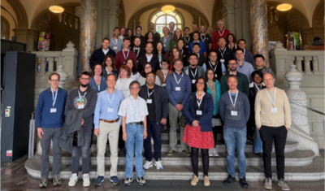
Conference / Workshop2026, Bern, SwitzerlandIMPACT workshopIMPACT workshop
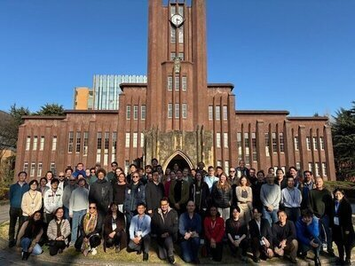
Conference / Workshop2026, Tokyo, JapanTIPMIP workshopTIPMIP workshop
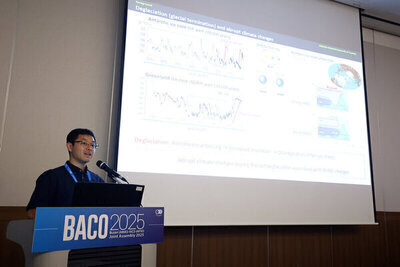
Conference / Workshop2025, Busan, KoreaBACO-25BACO-25
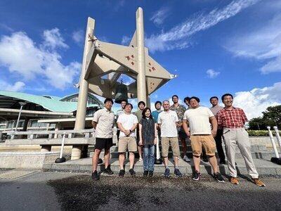
Conference / Workshop2024, Ginowan, JapanEPPC workshopEPPC workshop
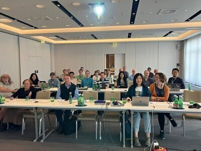
Conference / Workshop2024, Vienna, AustriaPMIP-carbon workshopPMIP-carbon workshop
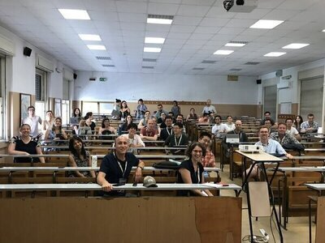
Conference / Workshop2023, Rome, ItalyINQUA-T5-0 workshopINQUA-T5-0 workshop
RESEARCH VISITS & COLLABORATION
共同研究・海外訪問 / Research Visits & Collaboration
国内外の研究機関への訪問の記録です。
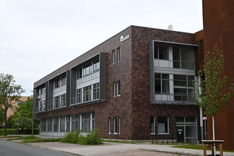
Research VisitBremen, Germany古気候モデリングに関する共同研究Research collaboration on paleoclimate modeling.
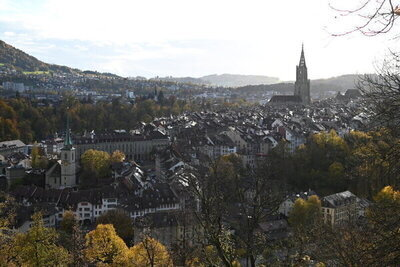
Research VisitBern, Switzerland古気候モデリングに関する共同研究Research collaboration on paleoclimate modeling.
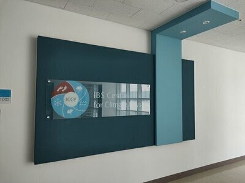
Research VisitBusan, Korea古気候モデリングに関する共同研究Research collaboration on paleoclimate modeling.
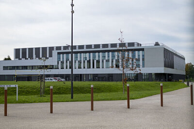
Research VisitParis, France古気候モデリングに関する共同研究Research collaboration on paleoclimate modeling.
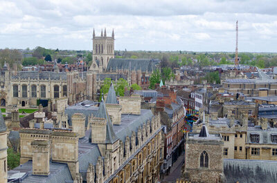
Research VisitCambridge, UK古気候モデリングに関する共同研究Research collaboration on paleoclimate modeling.
RESEARCH PROJECTS
共同研究・プロジェクト / Research Project
研究プロジェクトの記録です。
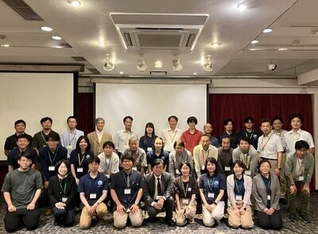
Research ProjectPRESTOJST さきがけ 海洋バイオスフィアResearch project "Blue Biosphere".
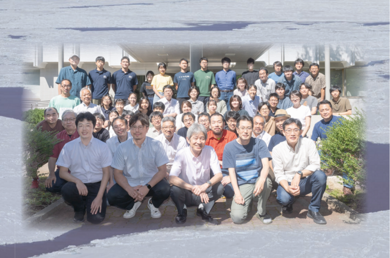
Research ProjectGLACESJSPS 学術変革領域研究（A）グローバル南極学Research project "Global Antarctic Science".
FIELDWORK & RESEARCH CRUISES
観測・研究航海 / Fieldwork & Research Cruises
海洋観測や研究航海での活動の様子です。
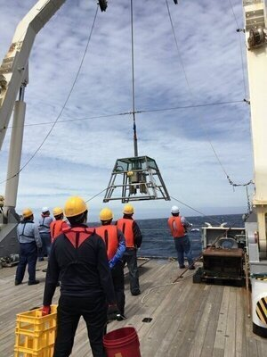
Research Cruise2020, Hakuhomaru採泥Ocean sediment sampling.
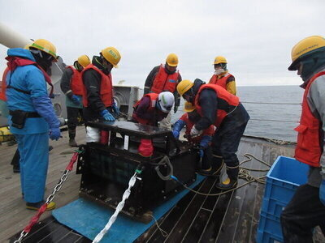
Research Cruise2020, HakuhomaruドレッジDredging.
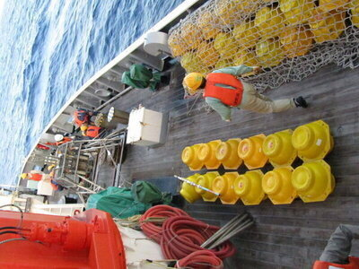
Research Cruise2012, Hakuhomaru係留系Mooring recovery.
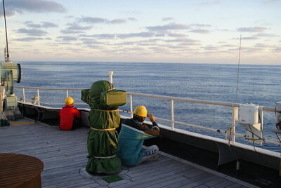
Research Cruise2012, Hakuhomaru凪Calm Sea.
LIFE IN THE LAB
研究室 / Life in the Lab
研究室での日常の様子です。
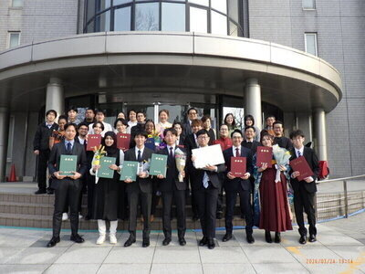
Graduation CeremonyUniversity of Toyama富山大学 2025 年度学位記授与式University of Toyama 2025 Graduation Ceremony.
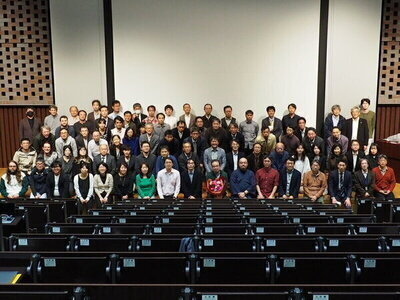
Retirement LectureKobe University林祥介教授退官記念講演Prof. Yoshi-Yuki HAYASHI's retirement lecture.
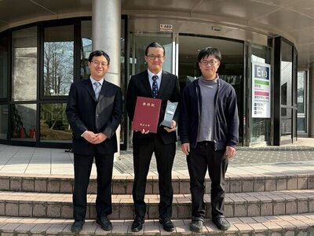
Graduation CeremonyUniversity of Toyama富山大学 2024 年度学位記授与式University of Toyama 2024 Graduation Ceremony.
ETC
その他 / ETC
その他の写真
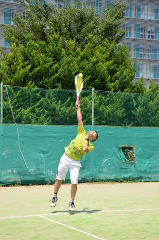
Off TimeTennisテニスA day on the court.